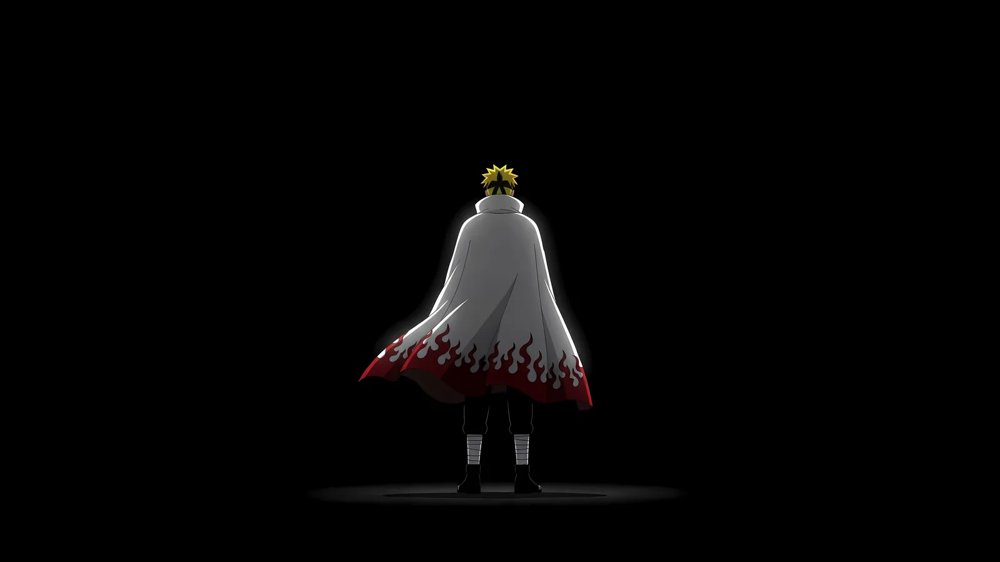

Anime
Mejores villanos del anime: antagonistas con objetivos e ideas
Antagonistas de anime memorables por su ideología, presencia y conflicto con los protagonistas, con criterios claros y aviso de spoilers leves.
Guías para descubrir manga, adaptaciones y lecturas en español.
Lectura destacadaAntagonistas de anime memorables por su ideología, presencia y conflicto con los protagonistas, con criterios claros y aviso de spoilers leves.
Ordenadas por última actualización. Cada artículo muestra la fecha de revisión.

Películas de animación japonesa para una sesión compartida, con recomendaciones por tono y una nota para revisar edades y temas.

Anime de terror y suspense para distintos gustos, desde horror psicológico hasta fantasía oscura, con avisos de tono y contenido.

Recomendaciones de anime romántico que van de la comedia escolar al drama adulto, con el tono y el ritmo de cada serie explicados.

Una selección de fantasía anime que combina aventura, comedia, drama y exploración, explicando qué ofrece cada mundo.

Anime de ciencia ficción para quien busca cyberpunk, viajes espaciales, dilemas tecnológicos o futuros especulativos.
Anime destacado de 2026: estrenos de temporada, títulos en emisión y el contexto correcto de los Anime Awards.
Explora la biblioteca por tema y formato.

Series y películas que influyeron en géneros, audiencias o formas de producción, con contexto y límites de la selección.

Una selección editorial de animes que alcanzaron reconocimiento internacional y marcaron distintas generaciones, sin confundir fama con calidad universal.

Una guía actualizada para seguir series en emisión, tendencias de temporada y popularidad por región.

Una guía editorial de series destacadas, sin atribuir puntuaciones o un ranking oficial a Crunchyroll.

Recomendaciones para dar el siguiente paso desde los grandes shonen, ordenadas por acción, aventura, humor y duración.

Una guía para elegir tu primer manga, entender tomos y demografías y encontrar ediciones legales en español.

Recomendaciones para principiantes organizadas por duración, género y tipo de historia, con opciones fáciles de probar.
Una selección editorial de anime de acción, desde fantasía y superpoderes hasta samuráis y ciencia ficción.
Una selección de anime narrativo para quienes buscan personajes, giros y mundos desarrollados con cuidado.
Series compactas y miniseries para terminar una historia sin comprometerse con cientos de episodios.

Una selección de personajes extraordinarios y una metodología prudente para evitar un ranking de fuerza engañoso.